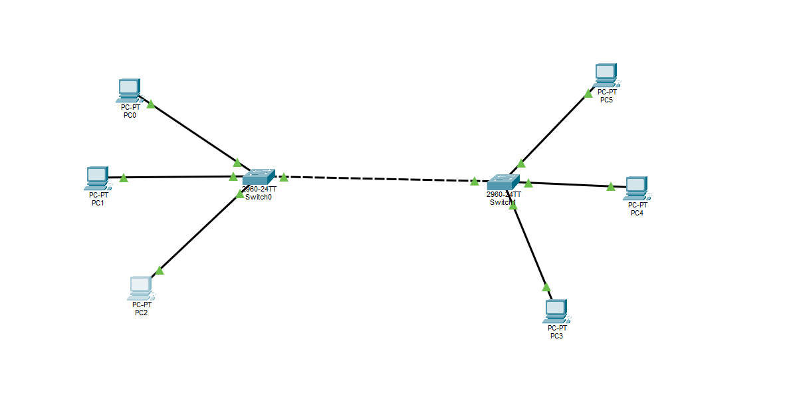
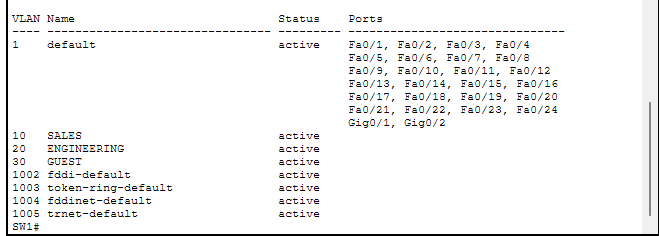
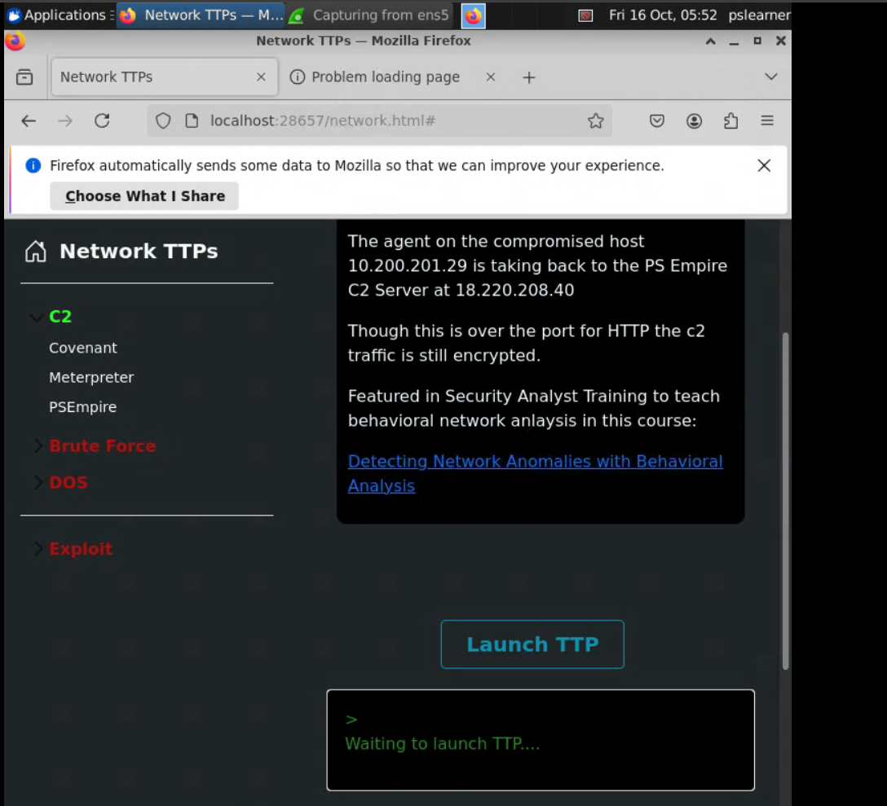
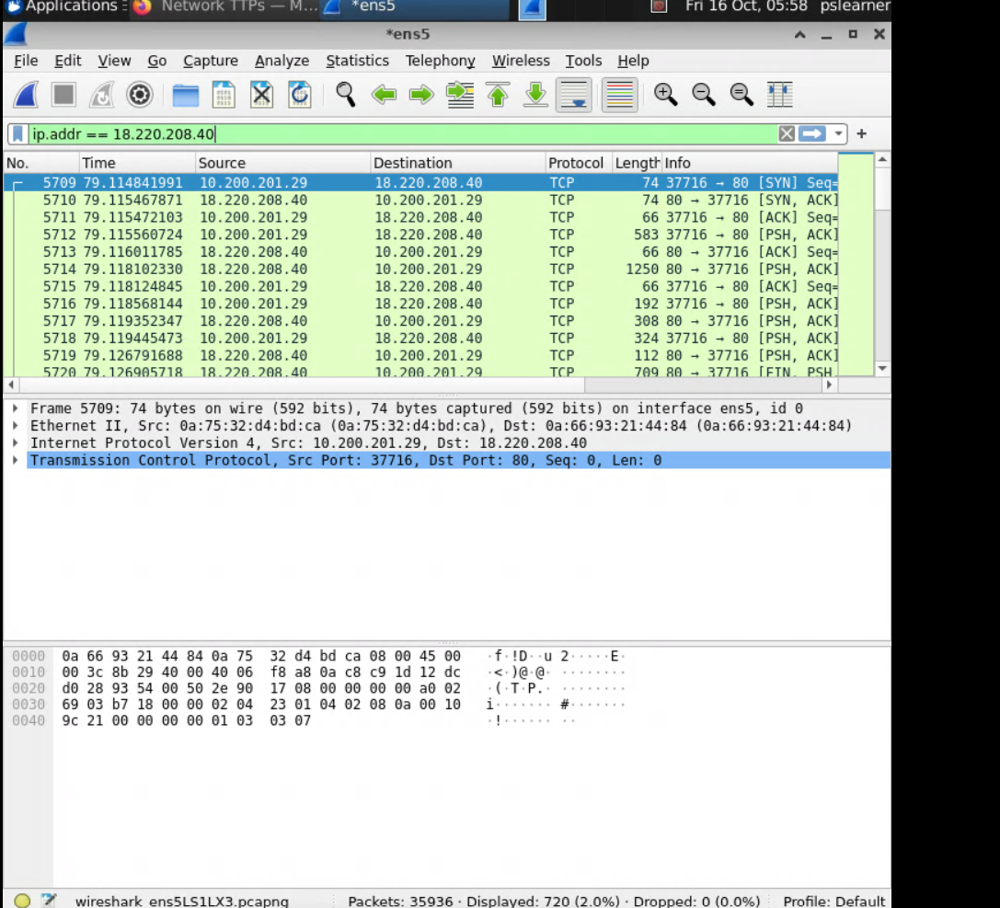

Building secure systems.
One challenge at a time.
Hi, I'm Henok Molla. I'm building my future in technology through hands-on networking and cybersecurity experience, continuous learning, and a passion for solving problems.
Learning. Building. Growing.
Developing practical networking and cybersecurity skills through hands-on labs, technical coursework, and real-world problem solving.
Technology is where curiosity meets purpose.
Through Year Up United and City University of Seattle, I'm developing my technical and professional skills to build a career in cybersecurity.
I enjoy hands-on learning, solving problems, and challenging myself to grow. My goal is to become a cybersecurity engineer while continuing to improve my leadership and communication skills.
Building my technical foundation.
Exploring networking and cybersecurity through hands-on learning and practical labs.
Networking
TCP/IP, VLANs, trunking
Security
Zero Trust, segmentation
Analysis
Wireshark, TCP traffic
Tools
Cisco Packet Tracer
Explore my projects.
Select any folder to preview its README. Explore my hands-on work and upcoming cybersecurity project ideas.
VLAN Network Segmentation
Configured VLANs and switch trunk connections, then tested network isolation using Cisco Packet Tracer.
Explore VLAN segmentation
Choose a VLAN to highlight an example group of devices connected through two switches.
All six computers and both switches are shown. Select a VLAN to explore an example logical group.
Learning diagram, not a verification result. My screenshot shows VLANs 10, 20, and 30 created, but the listed access ports were still under VLAN 1. The highlighted PC assignments are illustrative.
VLAN screenshots and what I learned
I built a small network in Cisco Packet Tracer with two switches and six computers. I created separate VLANs for Sales (10), Engineering (20), and Guest (30) and practiced checking their configuration.


show vlan brief command confirms that Sales, Engineering, and Guest VLANs were created.What I learned
VLANs help separate devices into logical groups, improving network organization and reducing unnecessary access between groups. I learned how VLANs are created, why trunk links are used between switches, and how to check configuration with switch commands. I also learned that creating VLANs is only the first step: port assignments and connectivity tests are important to verify that segmentation works.
Wireshark Traffic Analysis
Captured and examined TCP handshakes, packet flags, and traffic behavior during a controlled C2 simulation.
Wireshark screenshots and what I learned
In a controlled network security lab, I observed a simulated PowerShell Empire command-and-control (C2) connection and used Wireshark to examine the packets between a lab host and the C2 server. I focused on the TCP connection and network behavior rather than decrypting the traffic.


What I learned
I practiced applying an IP display filter, identifying source and destination addresses and ports, and recognizing TCP flags such as SYN, ACK, and PSH. I also learned how a three-way handshake starts a TCP session, and that traffic on port 80 is not automatically readable HTTP. Even when content is encrypted, packet timing, direction, sizes, and connection patterns can support network security analysis.
My Home Lab
A dedicated space to document my home lab.
My journey so far.
Year Up United
Network Security track · Technical and professional development
City University of Seattle
Coursework supporting my career in cybersecurity
Security Operations
Experience in communication, teamwork, responsibility, incident response, and operational environments.
Let's connect.
Let's build something meaningful.
I'm interested in networking, cybersecurity, and opportunities to learn and contribute.